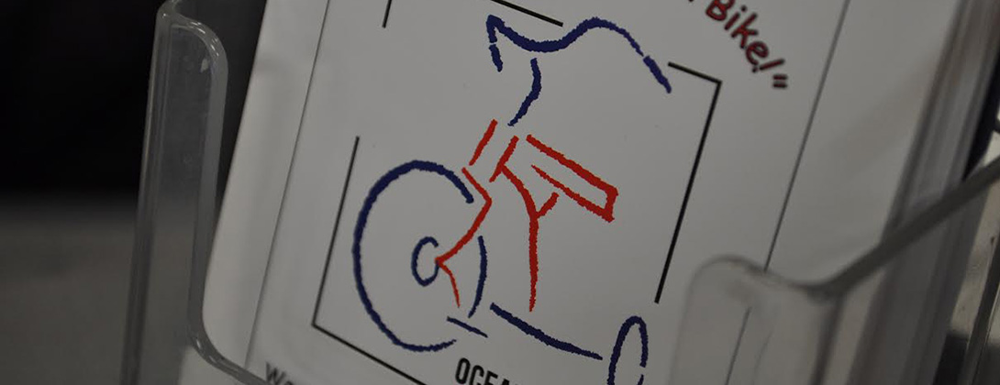
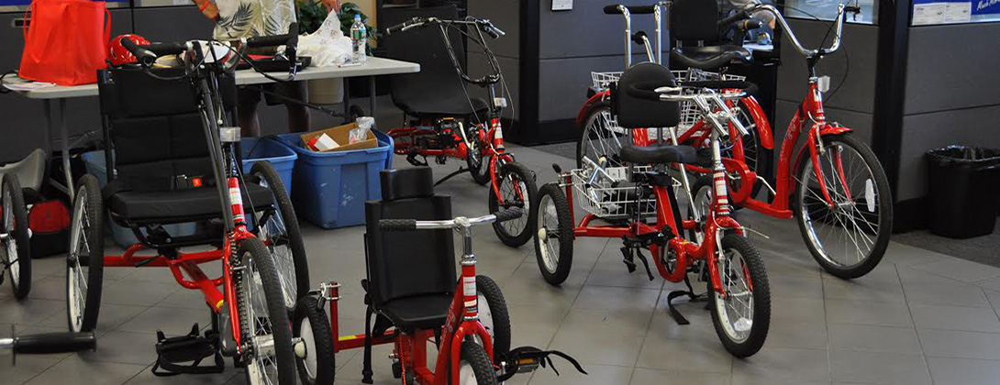

Shape the future of Ocean County AMUBCS by attending local events, meetings, and giveaways.
Support us in our efforts to create mobility and independence for people with disabilities.
Every AmTryke makes a difference. Find out how our Trykes are changing peoples lives.
Creating Mobility and Independence for People with Disabilities


Ocean County AMBUCS is a chapter of the national service organization, AMBUCS, composed of a diverse group of men and women dedicated to creating mobility and independence for people with disabilities.
Our primary purpose is to provide the AmTryke® therapeutic trike to children & others who are otherwise unable to ride a regular bike. We fundraise through friedns and family, local businesses and show up to Ocean County festivals.
Once a therapist evaluates and sizes a person for a tricycle, they will be placed on our AmTryke® Wish List. Separately, the chapter raises funds through donations and charity events to provide funding to fulfill the needs of those on the AmTryke® Wish List.
Ocean County AMBUCS held our inaugural Bike Day event in March 2012. Check out
highlights from our two largest Bike Fits!
Warning: This video may cause you have spontaneous and joyous tears and may result in your membership with our wonderful organization.
View the Bike Fit 2012 and Bike Fit 2015 highlights